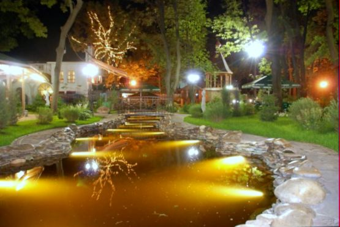
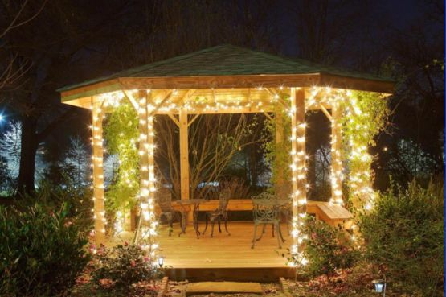
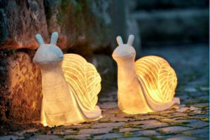

Качественный электромонтаж, Стаж 12 лет. Частный электрик, недорого.
Тел. 8 904 642 08 57. Николай.

Освещение в саду.
Устройство садового освещения - залог красоты и безопасности участка. Грамотно продуманная система позволит легко передвигаться по двору в темное время суток.
На первый взгляд кажется, что это простое дело. Однако для нормальной работы комплекса, его необходимо правильно подобрать и смонтировать.
Виды освещения делятся на три категории:
Функциональная.
Заключается в освещении дорожек и дверей. Для этого приобретают светодиодные или галогенные фонари.
Декоративная.
Является частью ландшафтного дизайна. Используется для подсветки клумб, альпийских горок, мини-фонтанов, бассейнов. Ей можно управлять с компьютера или смартфона. Стоит отметить, что она очень дорогая, и устанавливается только специалистами.
Безопасная.
Освещенный двор вряд ли привлечет мелких воришек и вандалов, даже если хозяев нет дома.
Сколько стоит сделать освежение в саду.
Цена работы от 70 руб. за кв. м. сада.
Выбираем подходящие световые приборы.

Все наружные осветительные приборы должны быть безопасными, внесезонными и простыми в эксплуатации.
Эти требования также относятся к выключателям и розеткам, находящимся на улице.
При выборе обращаем внимание на то, что светильники бывают нескольких видов:
- напольные, используются для освещения дворовых дорожек;
- настенные, освещают места отдыха;
- подвесные, крепятся под потолком, нужны для освещения террас, беседок и т.д.;
- гирлянды, ими украшаются деревья и расстояние между ними;
- подводные или плавающие, подсвечивают водоемы и фонтаны.
Для освещения дорожек лучше всего использовать маленькие светильники в виде грибков на солнечных батареях. Ночью они будут хорошо освещать предназначенную для них площадь, а днем выполнять декоративную функцию.

Это же освещение можно доверить и встроенным фонарям.
Они создадут легкий эффект тоннеля и укажут движение.
Большую популярность сейчас набирает светодиодная подсветка. Ею можно подсветить дом, лестницы, деревья, кустарники, клумбы, создавая причудливые образы.
Если на участке имеется фонтан или пруд, то их обязательно нужно оформить светом, чтобы раскрыть всю красоту в ночное время. Можно использовать как подводные, так и плавающие светильники. Они одинаково подчеркнут и раскрасят всю прелесть домашнего водоема.
Освещение ступеней и лестниц играют не маловажную роль, так как от нее зависит безопасное передвижения. Фонарики монтируются в каждую ступень, чтобы свет равномерно разливался по всей части подъема.
Особенности подключения освещения в саду.
В зависимости от типа освещения, проводка прокладывается по-разному.
Для высоковольтного освещения прокладка кабеля проходит на глубине примерно 1 метр. Кабель укладывается в полиэтиленовые трубы и имеет двойную изоляцию. Данный тип достаточно энергозатратный, но все же пользуется спросом.
.jpg)
Низковольтное освещение более безопасное и доступное. Нет необходимости укладывать кабель под землю, так как он может располагаться на земле. Но его нужно за декорировать и обернуть жестким материалом, чтобы не повредить во время садовых работ. Кроме того эта система не требует знаний в электрике, так как монтаж ее предельно прост.
Проявив немного творчества, можно превратить темный сад в настоящую сказку. Главное правильно подобрать дизайн и придерживаться правил безопасности.

Сделать электрику в квартире.

Расценки на электропроводку квартир.
Провести электропроводку в новостройке.
Электромонтаж в частном доме.
Электрика в загородном доме.
Сколько стоит замена электропроводки в двухкомнатной квартире?.
Сколько стоит проводка в 3 ком квартире?
Сколько стоит проложить проводку в четырех комнатной квартире?
Сколько стоит сделать внутреннюю проводку?
Стоимость штробление стен.
Электромонтаж двухкомнатной квартиры.
Замена электропроводки в панельном доме.
Электромонтаж проводов в бане.